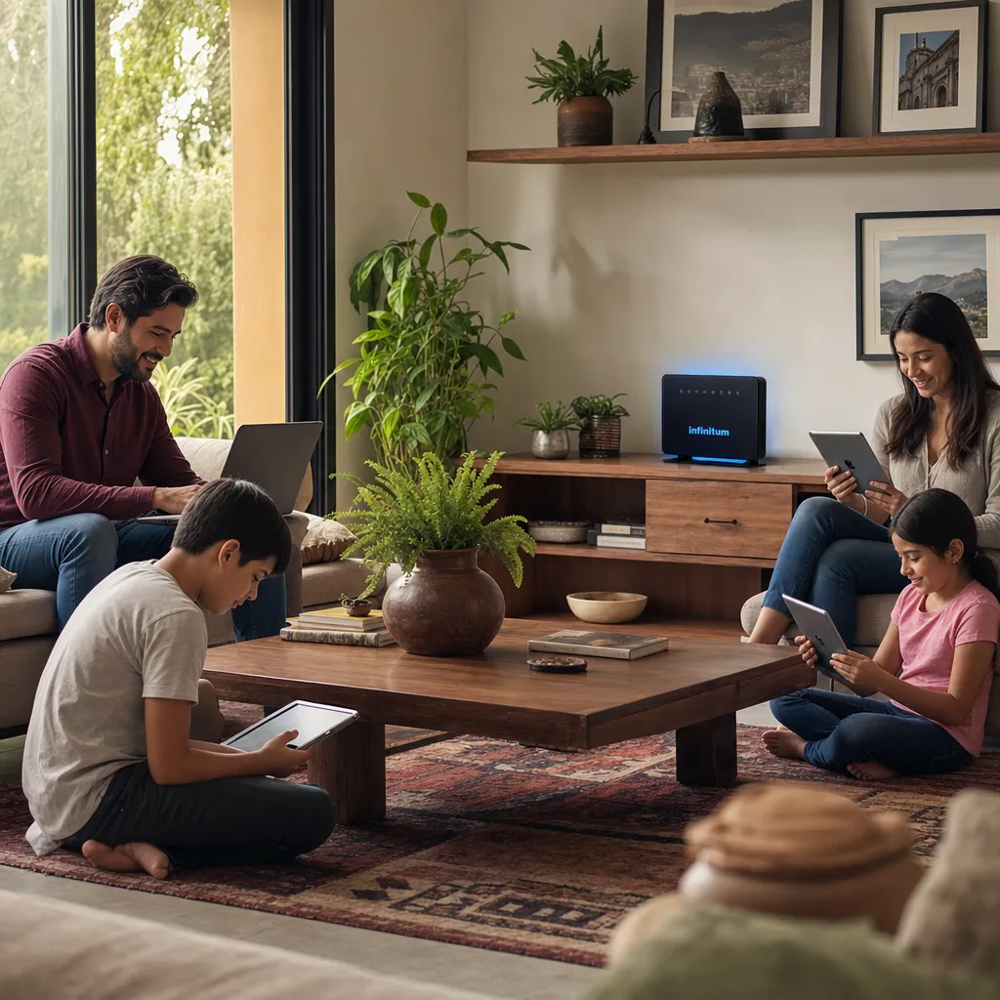

Mejor Internet para Casa 2026: Guía Completa de Proveedores y Precios en México

Mejor Internet para Casa 2026: Guía Completa de Proveedores y Precios en México

¿Cuál es el mejor internet para casa en México en 2026? Si necesitas una respuesta rápida: Totalplay y Telmex (Infinitum) lideran en fibra óptica, izzi es la mejor opción relación calidad-precio en cable, y Starlink es la única alternativa viable para zonas rurales. Pero la mejor opción depende de tu uso, tu zona y tu presupuesto. En esta guía desglosamos todo.
Los Mejores Proveedores de Internet en México para 2026
1. Totalplay – El Mejor en Fibra Óptica
Totalplay se ha consolidado como el proveedor de fibra óptica más agresivo del mercado mexicano. Sus planes ofrecen velocidades simétricas (igual de subida que de bajada), algo crucial para quienes trabajan desde casa o hacen streaming.
- Velocidades: Desde 100 Mbps hasta 1 Gbps
- Precios 2026: Desde $449 MXN mensuales (plan básico)
- Fortalezas: Fibra pura, buena cobertura en ciudades medianas y grandes, precios competitivos
- Debilidades: Soporte técnico irregular según zona
2. Telmex Infinitum – La Mayor Cobertura del País
Telmex Infinitum sigue siendo el proveedor con mayor cobertura geográfica en México. Si vives en una zona donde otros proveedores no llegan, Infinitum es tu opción por defecto.
- Velocidades: Desde 20 Mbps hasta 1000 Mbps (donde hay fibra)
- Precios 2026: Desde $389 MXN mensuales
- Fortalezas: Cobertura nacional, paquetes con Netflix incluido, estabilidad
- Debilidades: Velocidades asimétricas (menos de subida), congestión en horas pico
3. izzi – La Mejor Relación Calidad-Precio
izzi opera sobre la red de cable de Televisa y ofrece excelente relación calidad-precio, especialmente si contratas el paquete con TV incluida.
- Velocidades: Desde 50 Mbps hasta 500 Mbps
- Precios 2026: Desde $399 MXN mensuales
- Fortalezas: Precios competitivos, paquetes con TV, buena velocidad de descarga
- Debilidades: Velocidad de subida muy limitada (usualmente 10-20 Mbps), infraestructura de cable compartida
4. Starlink – La Revolución para Zonas Rurales
Para quienes viven en zonas donde la fibra óptica no llega, Starlink ha cambiado las reglas del juego. La internet por satélite de Elon Musk ofrece velocidades decentes donde antes no había nada.
- Velocidades: 50-250 Mbps (variable)
- Precios 2026: $2,300 MXN inicial por antena + $1,100 MXN mensuales
- Fortalezas: Funciona en cualquier parte del país, velocidades decentes
- Debilidades: Costo inicial alto, latencia variable (20-60ms), sensible a obstrucciones
Tabla Comparativa de Proveedores 2026
| Proveedor | Tecnología | Velocidad Máxima | Precio Desde | Cobertura |
|---|---|---|---|---|
| Totalplay | Fibra Óptica | 1 Gbps | $449 MXN/mes | Urbano y suburbano |
| Telmex Infinitum | Fibra/Cobre | 1 Gbps | $389 MXN/mes | Nacional |
| izzi | Cable (HFC) | 500 Mbps | $399 MXN/mes | Principalmente centro del país |
| Starlink | Satélite | 250 Mbps | $1,100 MXN/mes + $2,300 inicial | Nacional |
| Megacable | Fibra/Cable | 500 Mbps | $419 MXN/mes | Centro, norte y occidente |
¿Cuánta Velocidad Necesitas en 2026?
Uso Básico: Navegación, Redes Sociales, Streaming HD
Para 1-2 personas que usan internet para redes sociales, YouTube y Netflix en HD, 50-100 Mbps son suficientes. Cualquier proveedor cumple.
Uso Moderado: Trabajo Remoto, Videollamadas, Streaming 4K
Si trabajas desde casa con videollamadas frecuentes o consumes contenido 4K, necesitas 200-300 Mbps y una buena velocidad de subida. Aquí Totalplay y Telmex son mejores por sus velocidades simétricas.
Uso Intensivo: Gaming, Streaming, Smart Home
Para gamers competitivos, familias con múltiples dispositivos 4K y casas inteligentes, recomendamos 500 Mbps o más. Totalplay y Telmex (Infinitum 500+) son las opciones ideales.
Precios Reales en México 2026
Los precios varían según promociones y zona, pero estos son los rangos promedio:
- Plan básico (50-100 Mbps): $389-$499 MXN/mes
- Plan estándar (200-300 Mbps): $549-$799 MXN/mes
- Plan premium (500+ Mbps): $899-$1,499 MXN/mes
Preguntas Frecuentes
¿Cuál es el internet más rápido en México?
Totalplay ofrece planes de hasta 1 Gbps (1000 Mbps) en zonas con fibra óptica pura, seguido de cerca por Telmex Infinitum con velocidades similares.
¿Totalplay o izzi: cuál es mejor?
Totalplay es mejor si tienes cobertura de fibra óptica, especialmente para trabajo remoto y gaming por sus velocidades simétricas. izzi es una buena opción si buscas paquetes con TV y vives en zonas donde Totalplay no llega.
¿Vale la pena contratar internet de 1 Gbps?
Para el 95% de los hogares mexicanos, 300 Mbps son más que suficientes. Solo contrata 1 Gbps si tienes múltiples usuarios haciendo streaming 4K simultáneamente o si trabajas con archivos pesados.
¿Qué hacer si no hay fibra óptica en mi zona?
Si no llega la fibra, tus opciones son:
- Contratar Infinitum por cobre (limitado a 20 Mbps)
- izzi por cable (hasta 100-150 Mbps)
- Starlink como alternativa satelital
- Esperar a que llegue fibra (Totalplay está expandiéndose agresivamente)
Conclusión: Cómo Elegir el Mejor Internet para Tu Casa
Para elegir el mejor internet en 2026:
- Verifica cobertura: No todos los proveedores llegan a tu zona
- Define tu uso: ¿Trabajo remoto? ¿Gaming? ¿Solo streaming?
- Compara precios: Considera paquetes con TV si los usas
- Lee opiniones locales: El servicio varía enormemente por colonia
Nuestra recomendación: Si tienes fibra óptica disponible, Totalplay ofrece la mejor relación velocidad-precio. Si no, Infinitum es tu opción más confiable. Para zonas rurales, Starlink es revolucionario aunque costoso.